Nov 9
Networks: Archaeological, Social, Knowledge
or, how to treat relationships as meaningful units of analysis
What does it mean for something to 'go viral'?
'Going viral' is a theory of cultural and historical change.
What would we expect to see if 'going viral' was how change happens?
The two simulations demonstrate that context matters to how 'change' might manifest.
Underlying social structures matter, but so too do individual actions.
This also implies that there are levels of complexity in the world, and what we might see at one level of complexity is no guide to what might happen at another level.
Emergence is when a consequence of actions at one level interacts with actions at another.
<- complicated
complex ->
Complex adaptive systems: the idea that there are some systems of interaction where local interactions look chaotic and turbulent, but through emergent effects and feedback they naturally evolve to a point of stability between pure chaos and pure structure: self organizing criticality.
Everyone: start applauding. Listen.
This is theory to explain, not predict.
Systems that seem to be complex adaptive systems, with feedback and emergence and self-organized criticality include social systems like economics, culture.
Society emerges from individual interactions, individual interactions are constrained by societal norms.
Archaeologically, we find traces of individual actions: but we want to talk about societies and cultures and history!
brief primer of various network terms
- graph: the mathematical structure describing a set of relationships
- network: a graph for which we have additional information about the nodes or edges
- nodes: the 'things' that do the acting in a network: people, objects, organizations, places, whatever. Sometimes called 'vertices'
- edges: the connection, the relationship, between pairs of nodes
- unimodal/bimodal: one thing, many kinds of things = nodes
- density - the count of all possible ties ((n*n)-n)/2
The mathematical structure of the graph gives us a way of identifying structures or patterns that we interpret in the context of our domain
- Degree: Number of connections a node has
- Path: Sequence of nodes connected by edges
- Centrality: Measures the 'importance' of a node within the network, where 'importance' is conceptualized in different ways
- Degree Centrality: Based on the number of connections
- Betweenness Centrality: Based on the number of shortest paths passing through a node
- Closeness Centrality: Inverse of the sum of distances to all other nodes
- Clustering Coefficient: Measures how interconnected a node’s neighbors are
- Modularity: Also called community detection, identifies clumps of nodes whose pattern of interconnections is more similar to each other than to the rest of the graph
- Small world: a graph that looks as if all of the connections are random, but there are 'long distance' links that connect otherwise unconnected groups. It looks random, but behaves ordered. Some argue that small-world connections are the necessary element that gives rise to self-organization. This is also the phenomenon behind the game 'Six Degrees of Kevin Bacon'.
Shawn Graham was in H20 (2004) with Yves Jacques who was in Michael Kael contre la World News Company (1998) with Elliott Gould who was in The Big Picture (1989) with Kevin Bacon
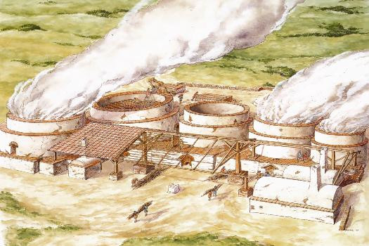
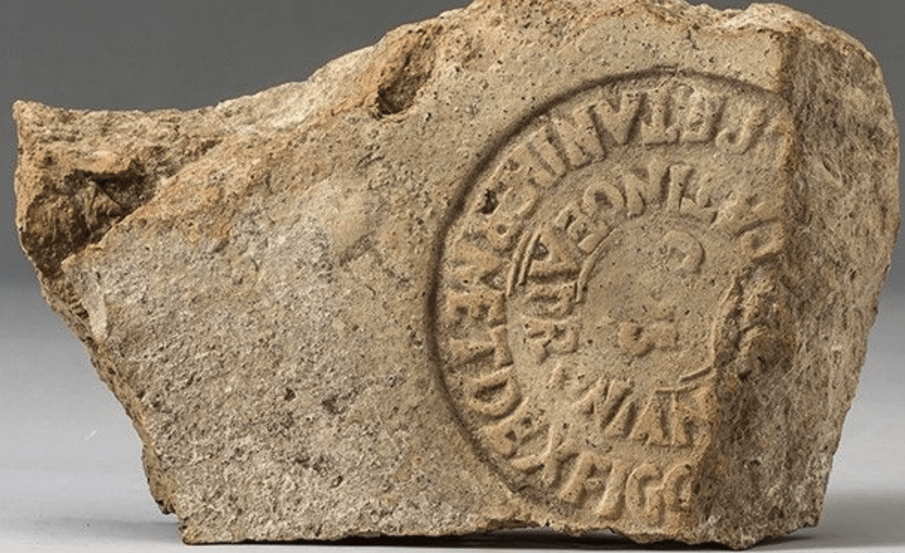
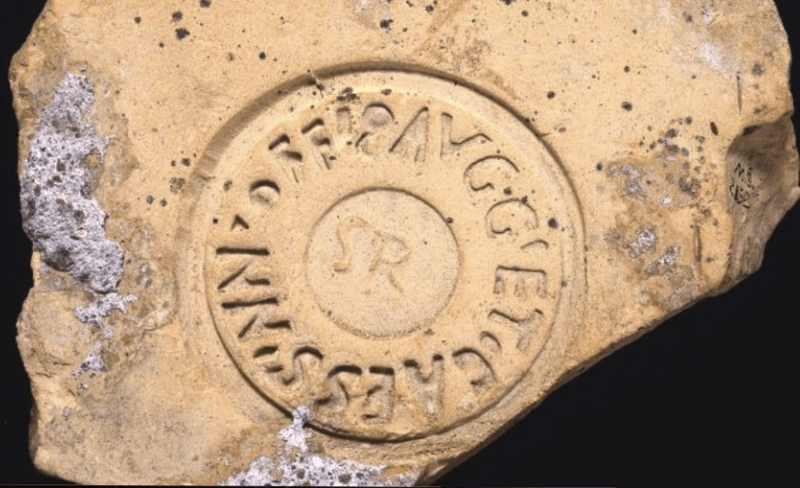
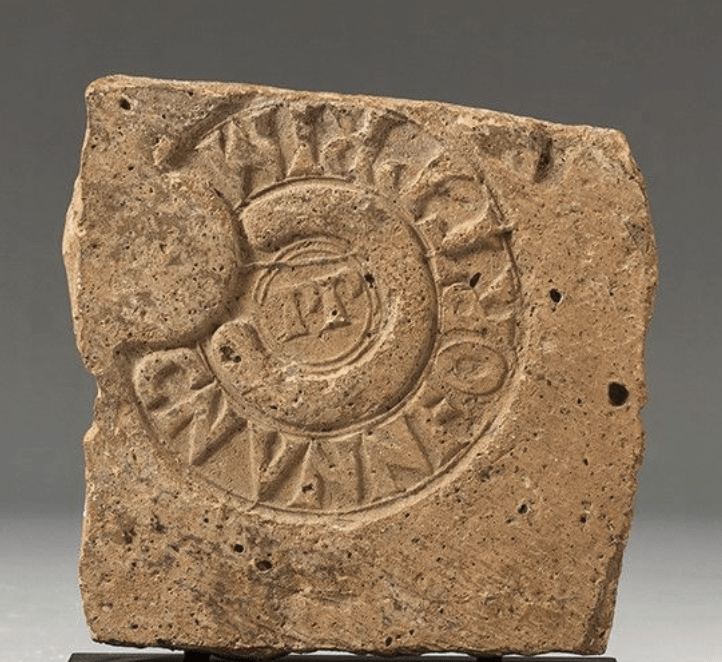
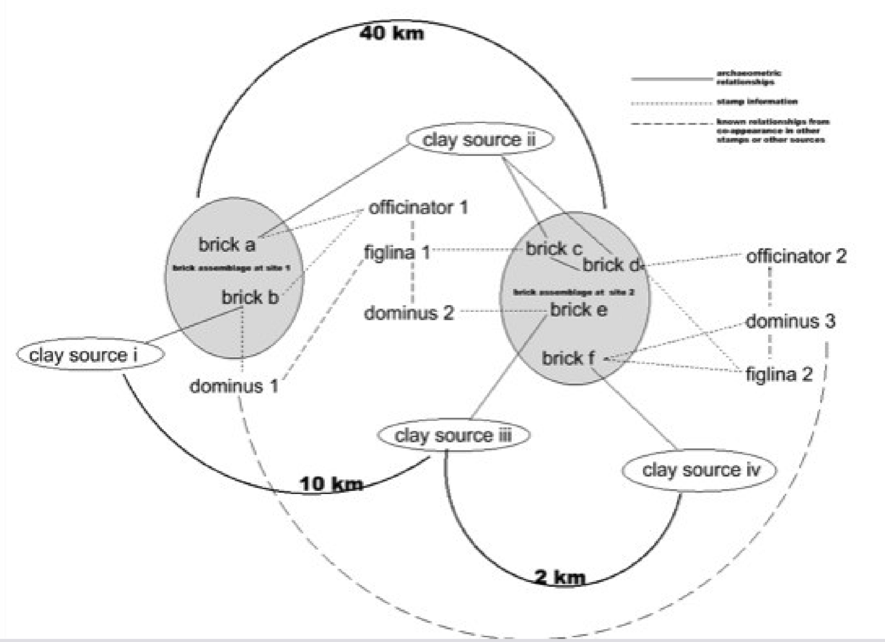
Actual illustration from my thesis. The goal here was to sketch out the hypothetical relationships I could deduce from the layers of information in a stamp, coupled with the layers of information from the findspot, and geochemical analysis of the fired clay.
My goal was to:
- see if these networks exhibited 'self organized criticality': did the shape of the resulting network have the characteristics of a 'small world', mostly short clumps of tight connections with occasional connections that spanned the graph?
- see which people / estates / workshops / clay sources were most 'central'
- see how these changed over time
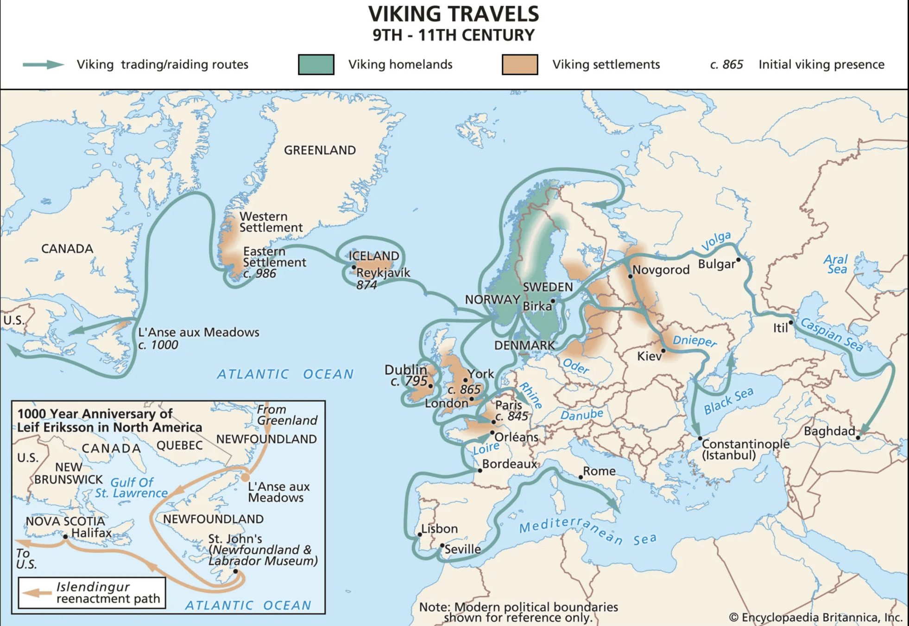
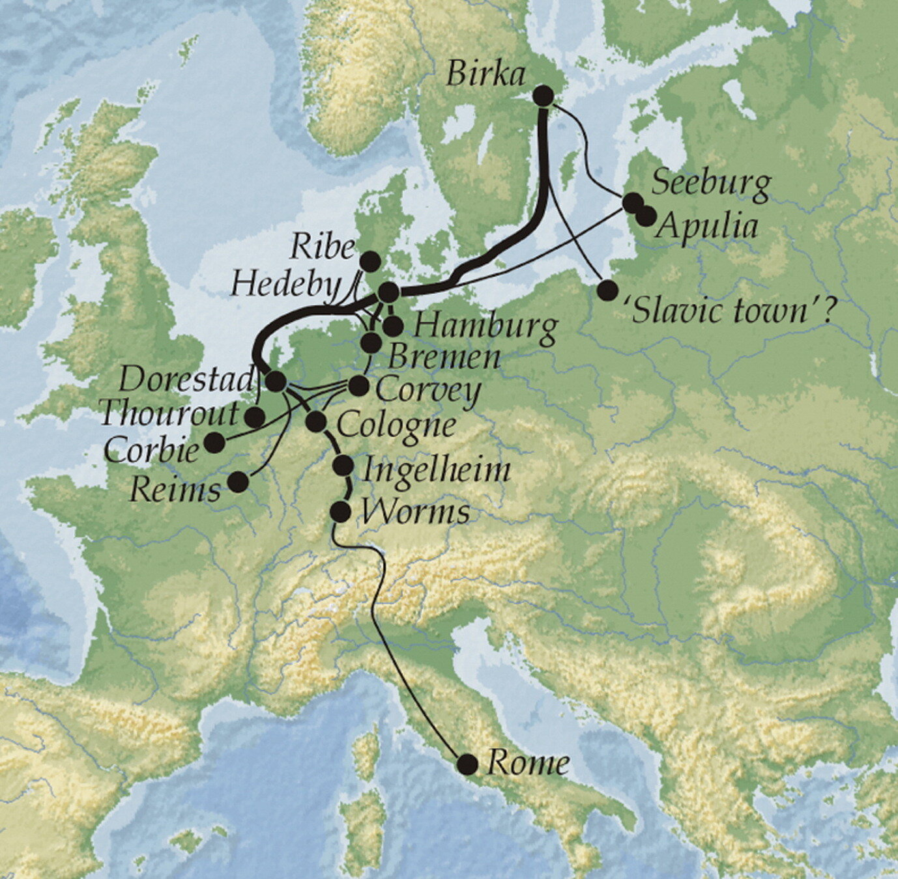
Sindbæk, S. M. (2007). The Small World of the Vikings: Networks in Early Medieval Communication and Exchange. Norwegian Archaeological Review, 40(1), 59–74. https://doi-org.proxy.library.carleton.ca/10.1080/00293650701327619
Networks are not just about shape or static measurements, but also about dynamics
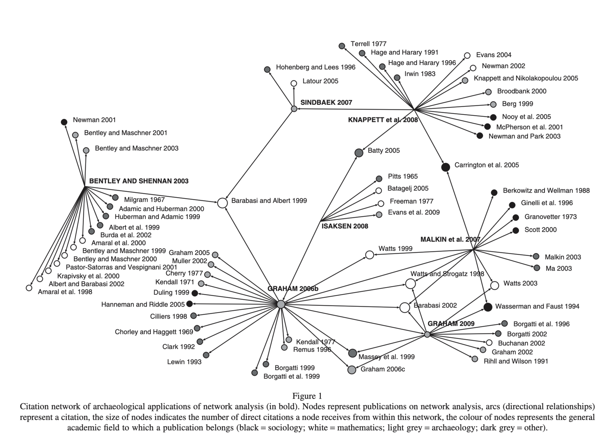
BRUGHMANS, T. (2010), CONNECTING THE DOTS: TOWARDS ARCHAEOLOGICAL NETWORK ANALYSIS. Oxford Journal of Archaeology, 29: 277-303. https://doi.org/10.1111/j.1468-0092.2010.00349.x
See also Barbara Mills, 2017
Node position versus overall structure
Node position: how the location of the node within the network influences the behavior and future of that node.
- 'strength of weak ties', power/influence over otherwise disconnected parts of the graph. See also 'brokerage' - broker positions depending on the nature of information and resources being shared.
- centrality: often thought of as a person or group with more social prominence. Many ways to measure; therefore there are also different ways in which social prominence may or may not result from structural prominence in the network - see also Bourdieu, ideas of different kinds of 'capital'
Whole network / overall structure approaches - overall cohesion and dynamics, emergence - archaeologists explore these networks with tools like agent based models and simulations (eg, me, Romanowska, Crabtree & Wren, Crema, others)
Ego networks
- networks built/visualized/analyzed from the perspective of one critical node - Elizabeth Greene treats shipwrecks as the 'ego' and the places where cargoes come from as the 'alters'; Angus Mol looks at sites within a Caribbean island similarly
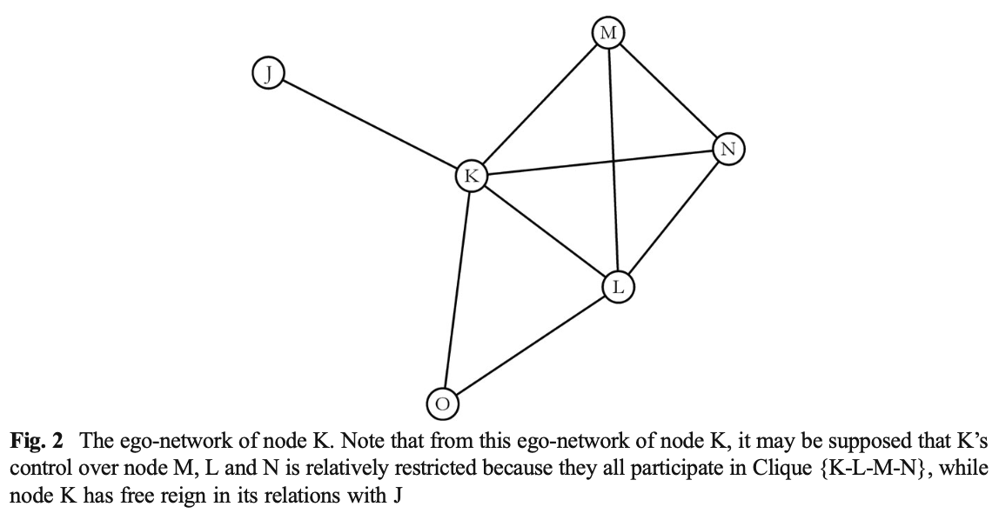
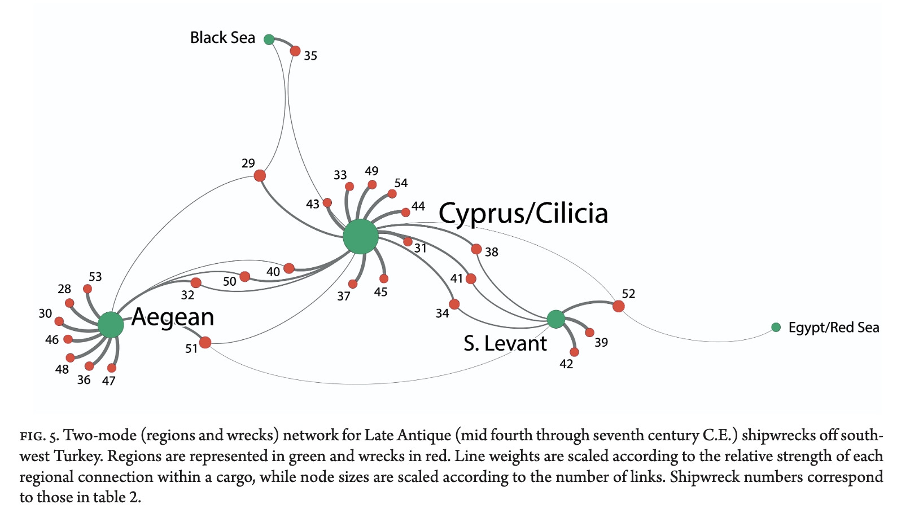
Leidwanger, building on Greene
Mol et al
Archaeological networks
- my brick work imagined explicitly social networks. So did Sindbaek's.
- A second generation of archaeologists make a distinction between what we were doing and what they are now doing:
"...we discuss network theory as a means to make inferences from archaeological data. We call this approach ‘network analysis’. We do not discuss the use of network theory to simulate historical processes, an approach which may be called ‘network modelling’."
Per Östborn, Henrik Gerding, Network analysis of archaeological data: a systematic approach, Journal of Archaeological Science, Volume 46, 2014:75-88.
Archaeological networks are a way of representing similarity between sites, which is taken as a proxy for some kind of causal relationship. And similarity involves figuring out some kind of measurement from some kind of artefactual data.
In which case, what does a 'central' node mean? what does a node with high 'betweeness' imply?
Part Two:
- Measuring Similarity
- Constructing A Network On That Data
- Analyzing the Resulting Network Structure
- Interpreting the Result
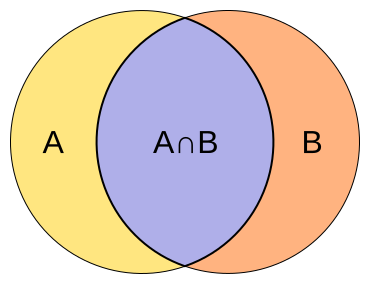
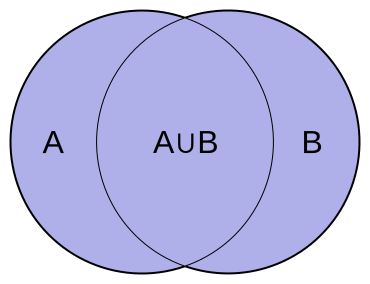
One way to measure the similarity of two archaeological sites - Jaccard index
Take two piles of things. Where the two piles have the same things (or the same amount of things), that's where they intersect.
Also figure out how many things in total exist for the two piles.
Divide the first number by the second, et voilà. Jaccard index.
Maybe the piles are actually 'sites'. And the things are 'pottery types'.
Site A has these wares: Cord-Impressed, Red Slip,
Site B has these wares: Red Slip, Incised Grey, Polished Black
thus: 1 type in common.
Together, all these wares are present:
Cord-Impressed, Red Slip, Incised Grey, and Polished Black.
thus: 4 types in total
Jaccard index?
1/4 = 0.25. Would you say these two sites are similar?
You are investigating 5 Late Bronze Age settlements (Sites A, B, C, D, and E) situated along an undulating river valley.
-
Excavations yielded four distinct ceramic styles: Cord-Impressed, Red Slip, Incised Grey, and Polished Black.
-
Regional topography includes lowlands, elevated terraces, and ridges that either permit or block line of sight between sites.
Excavation Data (Presence = 1, Absence = 0)
| Site | Cord-Impressed | Red Slip | Incised Grey | Polished Black |
|---|---|---|---|---|
| A | 1 | 1 | 0 | 0 |
| B | 1 | 1 | 1 | 0 |
| C | 0 | 1 | 1 | 1 |
| D | 0 | 0 | 1 | 1 |
| E | 1 | 0 | 0 | 1 |
J(A,B)=2/3 => 0.67. Figure out the remaining pairs.J(A,C)= _____
J(A,D)= _____
J(A,E)= _____
J(B,C)= _____
J(B,D)= _____ J(D,E)= _____
J(B,E)= _____
J(C,D)= _____
J(C,E)= _____
A
B
C
D
E
How strong a similarity 'counts' as a relationship between two sites? Decide.
Draw connections that are equal to or stronger than your cut-off.
A
B
C
D
E
if J > or equal to .50 is our cut off:
J(A,B)=2/3≈0.67
J(A,C)=1/4=0.25
J(A,D)=0/4=0.00
J(A,E)=1/3≈0.33
J(B,C)=2/4=0.50
J(B,D)=1/4=0.25
J(B,E)=1/4=0.25
J(C,D)=2/3≈0.67
J(C,E)=1/4=0.25
J(D,E)=1/3≈0.33
0.67
0.5
0.67
How might you interpret this?
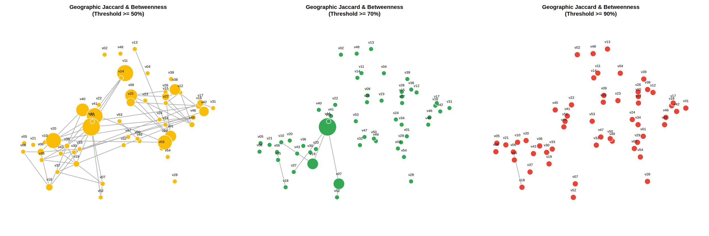
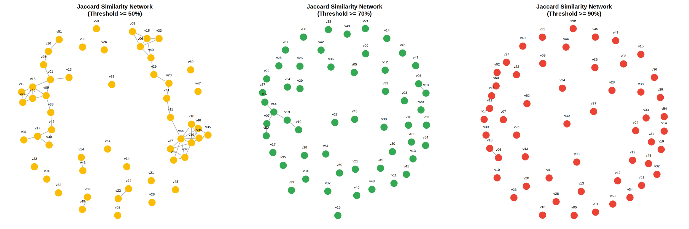
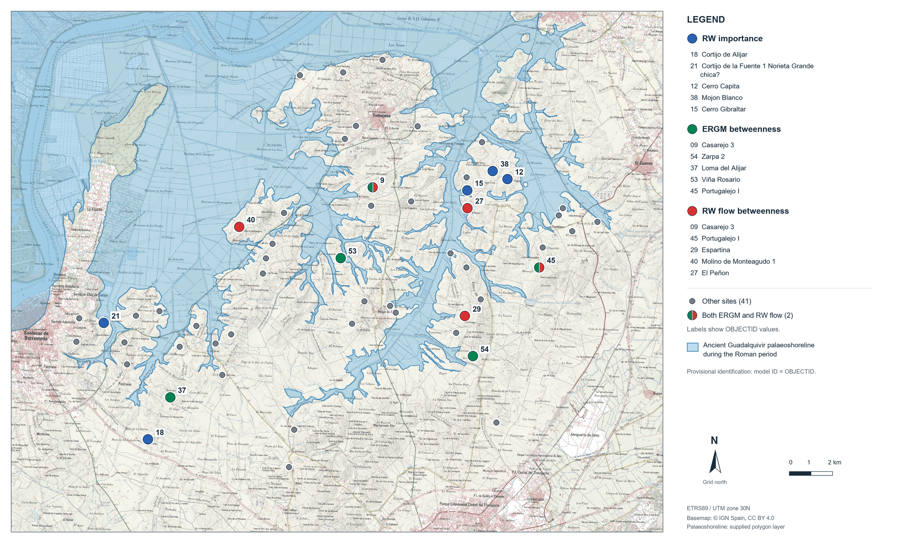
Sometimes, we draw archaeological networks based on intervisibility, or other 'geographic' ideas.
- archaeologists note the following sites, and make the following observations
[ Ridge 1 (250m) ] [ Ridge 2 (280m) ]Site A 200 m
terrace
Site B 140 m
mid slope
Site C 80 m
riverbank
Site E 90 m
hidden riverbend
Site D 220 m
high bluff
Fill out the visibility matrix, 1 = sightline, 0 = no sightline
-
A can see B (direct line across the slope) and C (clear line over the valley).
-
Ridge 1 blocks sightlines between A and D, A and E, and B and D.
-
B has a blind spot toward the river floor due to a forest terrace; B cannot see C, but B can see E along a narrow east-west ravine south of the ridges.
-
C (valley floor) has an unobstructed view upward to D, but Ridge 2 completely blocks sight from C to E.
-
D sits high enough to look straight down into E.
Fill in the visibility matrix: 1 = sightline, 0 = no sightline
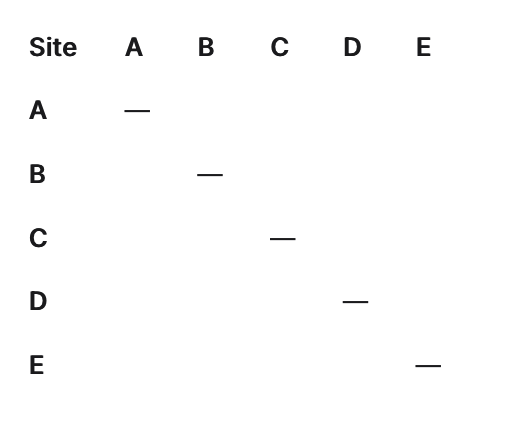
A
B
C
D
E
0.67
0.5
0.67
A
B
C
D
E
Assemblage Similarity
Intervisibility
assemblage_degree for site E=0, Sites B & C: Act as middle-tier conduits in the material network but hold identical structural weight to everyone else in the landscape loop
intervisibility_degree for site E=2
A social network
- the data at https://shawngraham.github.io/hist3000-f26/weeks/wk7.html at the bottom of the page represents a small farming community
- to turn this into data, what elements do you look at? what assumptions do you have to make?
- it occurs to me that you could also treat each family plot as a kind of 'assemblage' of traits, and then see which families are similar to what other families using the jaccard index (which could be represented as a network) too
- network navigator is a nice tool/toy for getting started
- so a regular graph exists in a very low-dimensional space, but a knowledge graph can exist in a multi-dimensional space
- because of the math used to turn the graph into multidimensional space, different 'kinds' of facts become easier to find than others.
- every fact represents a different direction through that space
- you can measure distance and angle between facts to infer new information
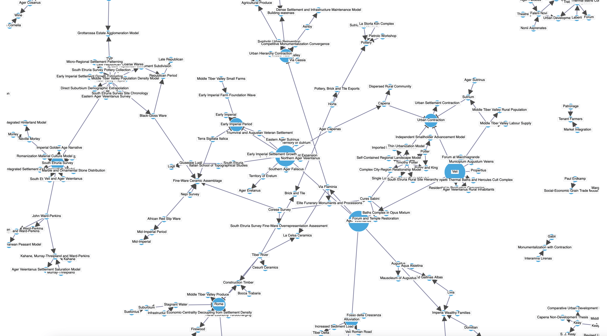
- maybe I'll talk about this another day.
- but: an ordinary graph, the relationships are all of the same KIND. There is only one kind of relationship expressed.
- a knowledge graph can have many different kinds of relationships
- it can have many kinds of actors.
- 's_graham', 'taught', 'hist3000'
- 'w_flett', 'studied', 'hist3000
- and so on
Knowledge graphs, briefly
Agent modeling
- for dealing with situations where there is the possibility of emergence
- for asking 'what if'
- for testing our just-so stories of the past for unintended (emergent) consequences
- for investigating the sequences of history that did not take place
- the nodes in a network can become agents in the simulation and constrained to act through the relationships in the network
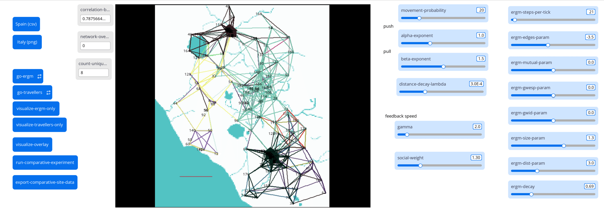
- flocking
- preferential attachment, or, how randomness can create structure
- the stupidest possible trade model on a network
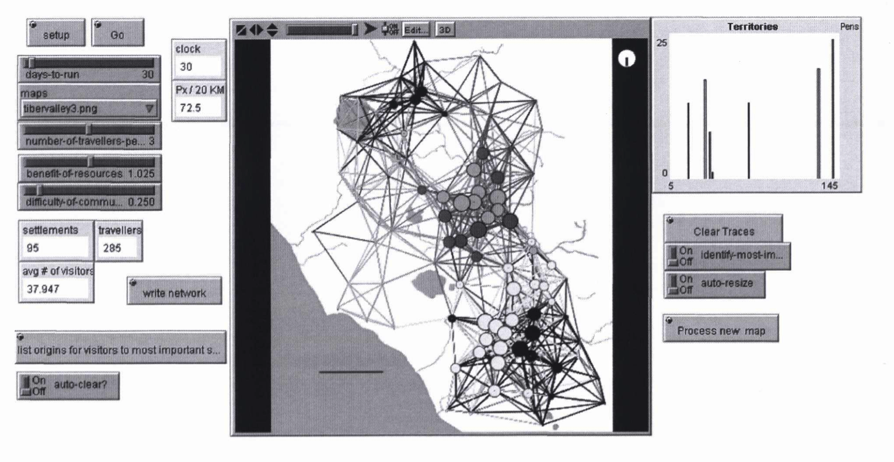